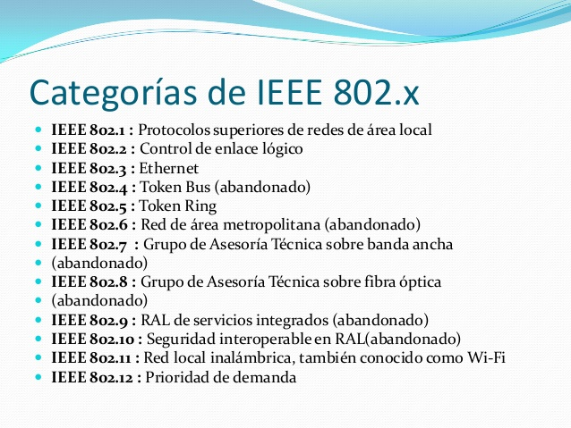

IEEE 802
IEEE 802 del Institute of Electrical and Electronics Engineers (más conocido por sus siglas, IEEE). Se identifica también con las siglas LMSC (LAN/MAN Standards Committee). Su misión se centra en desarrollar estándares de redes de área local (LAN) y redes de área metropolitana (MAN), principalmente en las dos capas inferiores del modelo OSI.
IEEE 802 fue un proyecto creado en febrero de 1980 paralelamente al diseño del Modelo OSI. Se desarrolló con el fin de crear estándares para que diferentes tipos de tecnologías pudieran integrarse y trabajar juntas. El proyecto 802 define aspectos relacionados con el cableado físico y la transmisión de datos.
IEEE que actúa sobre Redes de computadoras. Concretamente y según su propia definición sobre redes de área local (RAL, en inglés LAN) y redes de área metropolitana (MAN en inglés). También se usa el nombre IEEE 802 para referirse a los estándares que proponen, algunos de los cuales son muy conocidos: Ethernet (IEEE 802.3), o Wi-Fi (IEEE 802.11). Está, incluso, intentando estandarizar Bluetooth en el 802.15 (IEEE 802.15).
Se centra en definir los niveles más bajos (según el modelo de referencia OSI o sobre cualquier otro modelo). Concretamente subdivide el segundo nivel, el de enlace, en dos subniveles: el de Enlace Lógico (LLC), recogido en 802.2, y el de Control de Acceso al Medio (MAC), subcapa de la capa de Enlace Lógico. El resto de los estándares actúan tanto en el Nivel Físico, como en de Control de Acceso a los Medios.
